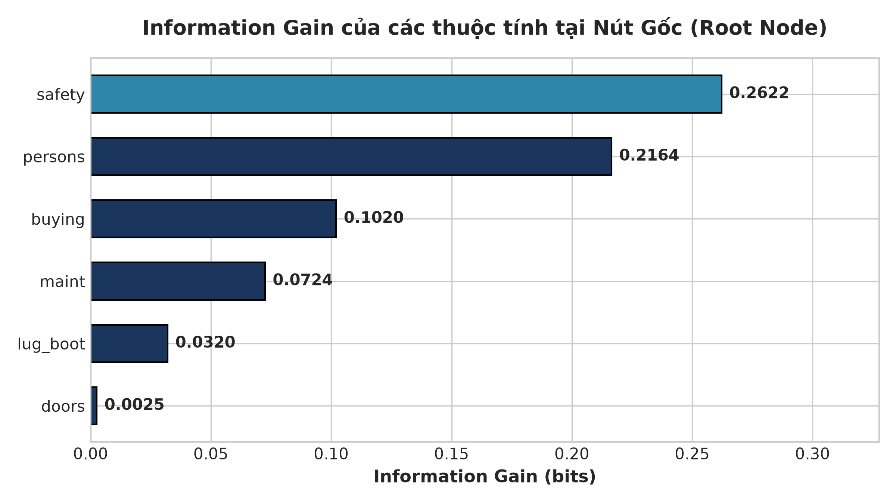
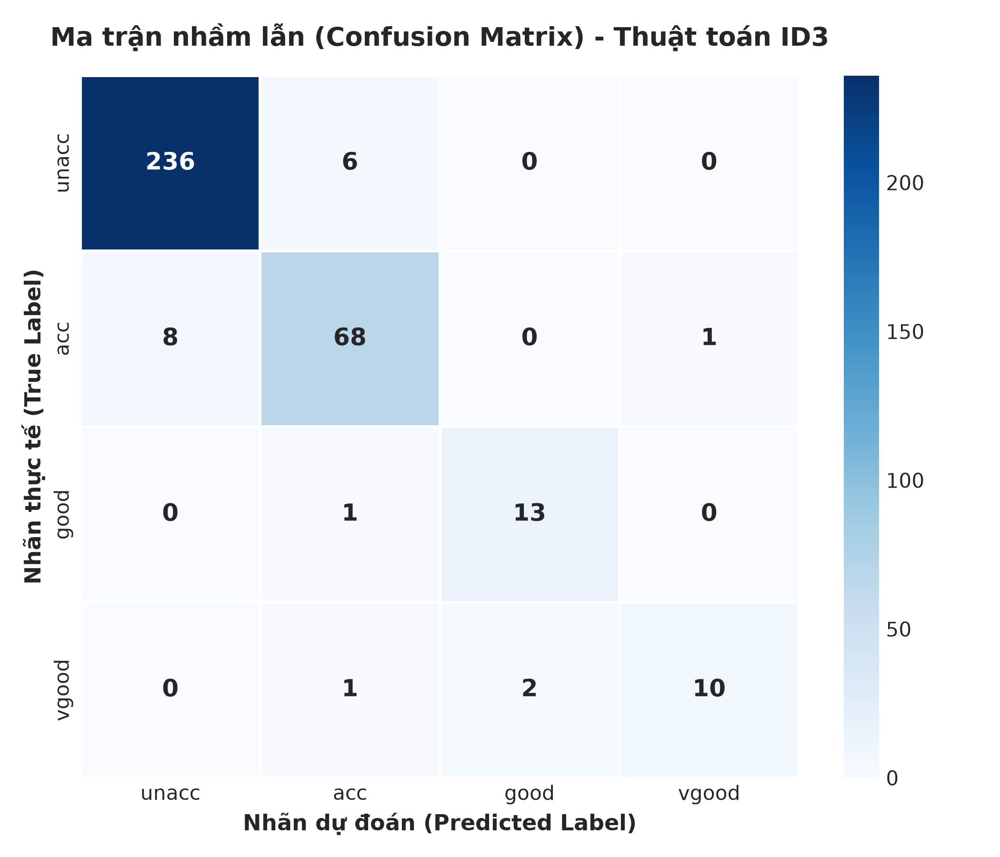
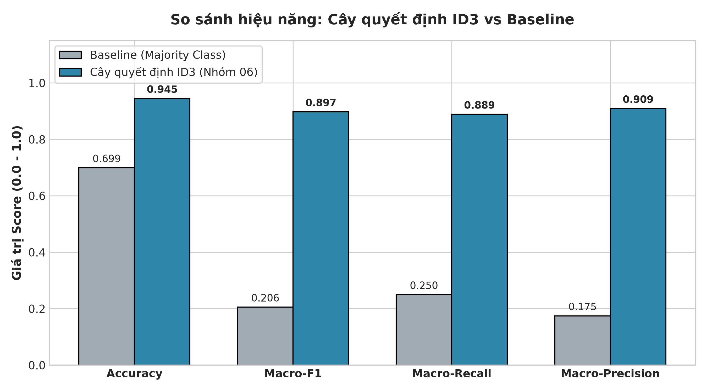

Tổng số mẫu xe
1.728
UCI Dataset (100% sạch)
Số đặc trưng đầu vào
6
Thuộc tính danh mục
Độ chính xác Test Set
94.51%
↑ +24.57% so với Baseline
Macro-F1 Score
0.8975
Đa lớp cân bằng
⚡ Chọn nhanh mẫu thử nghiệm điển hình:
KẾT QUẢ DỰ ĐOÁN TỪ CÂY QUYẾT ĐỊNH ID3
1. Bảng xếp hạng Information Gain tại Nút Gốc (Root Node)
Tại nút gốc (1.382 mẫu Train), ID3 tính Entropy và Information Gain của cả 6 thuộc tính để chọn thuộc tính phân tách tối ưu nhất:
| Xếp hạng | Thuộc tính | Ý nghĩa | Information Gain (bits) | Được chọn làm Nút Gốc |
|---|---|---|---|---|
| #1 | safety | Mức độ an toàn | 0.26216 | ⭐ CÓ (Gain lớn nhất) |
| #2 | persons | Sức chứa người | 0.21641 | Không |
| #3 | buying | Giá mua xe | 0.10196 | Không |
| #4 | maint | Chi phí bảo dưỡng | 0.07244 | Không |
| #5 | lug_boot | Khoang hành lý | 0.03198 | Không |
| #6 | doors | Số cửa xe | 0.00252 | Không |

2. Cấu trúc cây quyết định đã huấn luyện
Mô hình có tổng cộng 384 nút, gồm 279 nút lá và độ sâu lớn nhất là 6 tầng. Nút gốc bắt đầu bằng việc kiểm tra safety.
1. Bảng so sánh ID3 vs Mô hình Baseline đối chứng (Majority Classifier)
| Chỉ số (Metric) | Baseline (Majority) | Cây quyết định ID3 (Nhóm 06) | Chênh lệch |
|---|---|---|---|
| Độ chính xác (Accuracy) | 69.94% | 94.51% | +24.57% |
| Macro-F1 Score | 0.2058 | 0.8975 | +0.6917 |
| Macro-Recall | 0.2500 | 0.8890 | +0.6390 |
| Macro-Precision | 0.1749 | 0.9094 | +0.7345 |
Ma trận nhầm lẫn (Confusion Matrix)

So sánh Baseline vs ID3

Phân tích bộ dữ liệu Car Evaluation (UCI)
Bộ dữ liệu gồm 1.728 mẫu xe được khảo sát không có giá trị thiếu. Dưới đây là phân bố 4 mức độ phù hợp:

Thông tin Đề tài & Nhóm nghiên cứu
Môn học: Khai phá dữ liệu (Data Mining)
Nhóm thực hiện: Nhóm 06 – Lớp QT01
Đề tài: Phân loại mức độ phù hợp của ô tô bằng thuật toán ID3 (Car Acceptability Classification Using ID3)
Nguồn dữ liệu: UCI Machine Learning Repository - Car Evaluation (Marko Bohanec, Vladislav Rajkovič)
Thuật toán: Iterative Dichotomiser 3 (ID3) tự lập trình 100% bằng Python thuần.